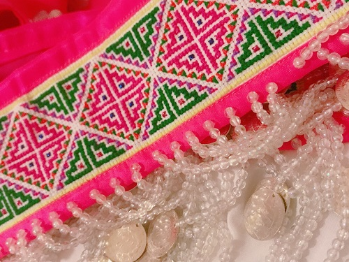

I make things with my hands and machines,
and practice the art of Hmong needlework.
See my work at Hlub Paper Studio
and @hlubpaperstudio
Hlub Paper Studio was born from my coping with the pandemic and violence that many of our communities experienced during the summer of 2020. A reflection from March 2021:
It has been a very difficult couple of weeks and long year since the last times many of us have met. I do much of my sewing at night, perhaps to the dismay of my parents because the sewing machine is so loud. What I have been able to do through Hlub Paper Studio is to cope with the many forms of violence we have experienced and continue to experience in ways that many of us may not have experienced before, nor ever felt so viscerally.
If we survive all of this violence, we shall be stronger and wiser. We shall remember the history we have learned in these months and the loved ones we have lost; the hands we long to hold will be in our palms; and I hope that we shall remain optimistic about a changing world.
The world is never stepping back, only moving forward continuously. Even if violence has continue to remain stagnant, it is not unbeknownst to us because we will always be stronger, and we will always have new ways to take the step back that violence have dragged us and move it forward 10 times more.
With spring, comes rain in many parts of our world, I remember words from a book I have yet finished from many years ago: “once the storm is over, you won’t remember how you made it through, how you managed to survive. You won’t even be sure, whether the storm is really over. But one thing is certain. When you come out of the storm, you won’t be the same person who walked in. That’s what this storm’s all about,” (Haruki Murakami, Kafka on the Shore).